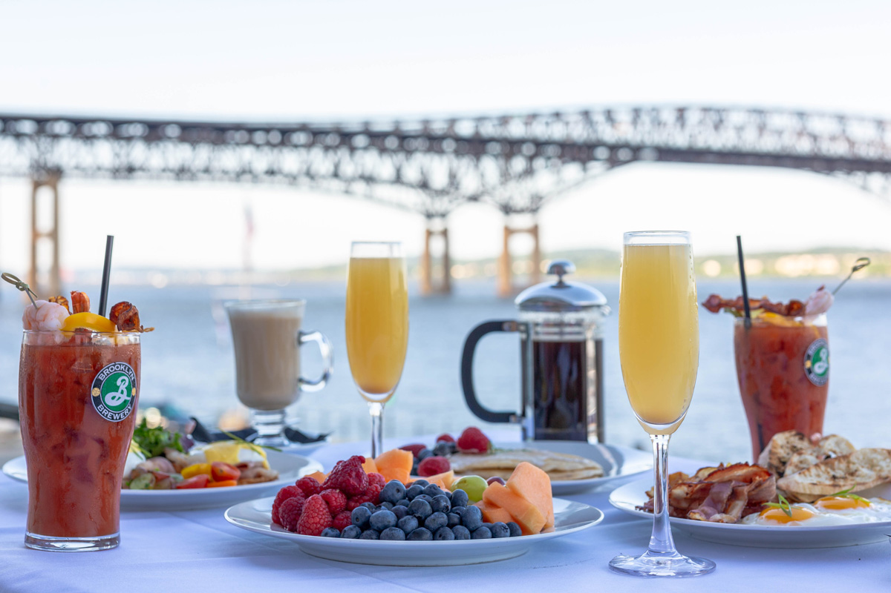

Savor Outdoor Dining at These Hudson Valley Restaurants



Enjoy an al fresco meal while taking in the Hudson Valley views at these local eateries, which delight with farm-to-table fare and more.
Dreaming of a summery meal at your favorite Hudson Valley restaurant? Consider dining al fresco instead of venturing indoors. With beautiful days ahead of us, there’s no time like the present to lounge outdoors over a meal with friends, perhaps with a cocktail in hand. So what are you waiting for? Scroll through our list to scout out some of the finest outdoor dining in the region, then prepare your tastebuds for what’s bound to be an unforgettable foodie experience.
1839 Restaurant and Bar
Washingtonville
Situated right next to Brotherhood Winery, the oldest winery in the United States, this restaurant and bar is a local favorite for elevated pub fare, local vino, and plenty of outdoor seating. Snag a seat on the patio and chow down on a plate of wings, a chicken sandwich, or a hearty burger.
1883 Tavern at The Stewart House
Athens
View this post on Instagram
This trifecta restaurant, bar, and boutique hotel makes its home on the banks of the Hudson River. For select weekends, The River Grill offers music performances to go along with pub fare such as the fish and chips and a grass-fed burger. Also enjoy inventive cocktails, fine wine, or local craft beer year-round.
Amore Italian Kitchen
Armonk
Taking the family out for pizza is always a good bet, but it’s even better when the place has a great atmosphere. That’s what you’ll find at Amore, where you can enjoy your pizza – along with good wine, excellent salads, and lots of other Italian specialties – on a lovely wraparound backyard patio bordered by a stream. Colorful umbrellas, pots of flowers, and a wooden pergola complete the pretty picture.
Backbar
Hudson
Outdoor dining at Backbar has been the norm long before the pandemic required many establishments to expand their al fresco space. The open-air setting is full of picnic tables, umbrellas, and string lights, giving the atmosphere a casual yet vibrant flair. You’ll find Southeast Asian street food on the menu here, with favorites such as cumin spiced tots and a selection of dumplings, to name a few. The wide list of wines, beers, and specialty cocktails perfectly complements the outdoor atmosphere.
Billy Joe’s Ribworks
Newburgh
Come for barbecue, American classics, live music, and a rollicking good time. With a large deck for outdoor dining, hungry diners can enjoy the sun or pop an umbrella up for some shade. At night, diners can enjoy the string light ambiance and head to the outdoor bar to grab a drink.
Blooming Hill Farm
Monroe
View this post on Instagram
When it comes to farm dining, this Orange County farm is at the top of our list. The seasonally inspired menu includes dishes such as wood-fired tomato-and-garlic pizza, wood-roasted lamb, sauteed spring vegetables, and wood-fired beets. Enjoy the rural view while dining, then visit the farmhouse shop for an eclectic range of organic products.
Blu Pointe
Newburgh
Blue Pointe offers one of the best views on the west side of the Hudson River. The restaurant features farm-to-table and seafood-focused fare in a sophisticated setting. The outdoor patio has intimate table settings, a fire pit, and a bar under the gazebo.
Brown’s Brewing Company
Troy
View this post on Instagram
Sip on award-winning beer alongside the Collar City’s bank of the Hudson River. On a deck adorned with twinkling, vine-strung lights, enjoy summer classics like its Joann IPA with a creamy artichoke dip or the pulled pork sandwich, which pairs exceptionally well with Cherry Razz fruit beer.
Café Pitti
Newburgh
This wood-burning oven house offers classic cuisine with eclectic twists. Its intimate, cozy charm is plucked straight from an Italian side-street restaurant. Sit outside and enjoy the views of the Hudson River while sipping on red wine. Find whatever you’re craving on the menu, which tempts with options such as steak, seafood, pasta, and the signature artisan thin-crust pizza.
Charlotte’s
Millbrook
Incredibly cozy outdoor dining is a major draw for this lovely space. Sit at a table surrounded by lush gardens, all while enjoying fare from Charlotte’s very own Swedish chef. Menus change frequently, making each experience here a little different from the last.
City Winery Hudson Valley
Montgomery
Get cozy on one of this Orange County destination’s two spacious patios. During the day, al fresco diners have access to serene views of the Wallkill River and the sprawling City Winery Hudson Valley property (once home to a historic knitting factory). Romantic evenings are extra-special with mood-setting string lights, cozy heat lamps, and outdoor fireplaces. The City Winery burger, homemade truffle fries, steak, and crispy chicken sandwich are just a few of the savory dishes guests pair with award-winning wines.
Clemson Bros. Brewery
Middletown and New Paltz
Dreaming of lazy summer afternoons filled with cold Hudson Valley beer and tons of sunshine? You can find just that at Clemson’s Middletown and New Paltz locations. The former has its own shaded beer garden, while the latter has a charming umbrella-ed patio. Wherever you go, lean into Clemson’s brewpub vibe with a hearty burger like the Big Bad Wolf, which comes with applewood-smoked bacon, bacon aioli, onion jam, Taylor ham, and smoked gouda.
Cosimo’s Brick Oven
Middletown, Newburgh, Poughkeepsie, Woodbury
As its many loyal customers can attest, any of Cosimo’s four restaurants are a must for Italian staples from arancini to crispy polenta. Your meal can be as casual as a wood-fired pizza and a glass of white sangria made with Brotherhood’s Riesling, or as indulgent as the lobster risotto with a perfectly paired Italian pinot grigio. All locations have patio seating, and the Poughkeepsie restaurant even has a bocce court.
Diamond Mills Hotel & Tavern
Saugerties
Expect a menu that is fresh, seasonal, and oh-so-delicious from The Tavern’s CIA-trained executive chef, with selections highlighting the fabulous bounty of the Hudson Valley. Specials may include anything from island salmon or an Impossible burger to grilled cauliflower steak or seared crab cakes. Enjoy the cuisine while taking in the gorgeous view of Cantine Falls on the Esopus Creek, which lights up with festive colors.
Dolly’s Restaurant
Garrison
You can practically touch the water from the patio deck seating at this Garrison gem, named for the movie musical Hello Dolly!, which was filmed at the location. As you enjoy the West Point and river views, dine on dishes like sourdough focaccia, cauliflower nuggets, and broiled Gulf shrimp – and that’s just for starters. For the mains, Dolly’s grass-fed burger is a local icon, although the vegetarian burger is just as show-stopping. It’s all eclectic, international, bistro-style, and good!
Donna’s Italian
Troy
View this post on Instagram
Outdoor dining options at this Grandma-style Italian restaurant include sidewalk seating on Broadway and a more intimate rooftop patio called The Garden. Have Donna’s sling you some popular pies, like the Drunk Uncle, drowning in vodka sauce, mozzarella cheese, fennel pepperoni and pepperoncini, and red onion; or treat yourself to a tangy and savory shrimp scampi – with a limoncello spritz, of course. Throughout the summer months, catch live jazz or summer concerts from the nearby Troy Summer Square.
Dubrovnik Restaurant
New Rochelle
The two-tier backyard dining area of this Croatian restaurant is a beautiful surprise: on the top level you’re overlooking the garden, and the lower level puts you right next to towering grapevines, fig trees, and the restaurant’s own vegetable garden. The menu features roasted meats, grilled fish, fresh vegetables, and more, all from the outdoor wood-fired oven.
Essie’s Restaurant
Poughkeepsie
This restaurant and brunch café offers a cozy atmosphere inside and out. Sit at a window seat within the restaurant or head to the sidewalk seating to enjoy the full sunshine. Essie’s offers both brunch and dinner menus with options such as chicken and waffles, frittatas, vegetable tikka masala, and a bison burger. The restaurant also has a variety of drinks including cocktails, wine, beer, whiskeys, bourbons, and specialty libations.
Frank Guido’s Port of Call
Catskill
Stroll on over to the Catskill waterfront for seafood dining that will please any palate. Keep it American with the New England clam chowder and Maryland crab cakes or make a culinary journey to the Mediterranean with shrimp fresca, a shrimp scampi linguini pasta in roasted garlic oil, and the pan-seared sea scallops with rosemary-infused olive oil. Feel free to arrive by car or by boat, then keep the outdoor vibes going with a patio seat by the water.
The Greens at Copake Country Club
Craryville
You don’t have to be a club member to eat here, but you’ll certainly feel like a VIP as you dine on the spacious outdoor deck and look out at the first tee and fairway of this historic 160-acre golf course. With casual seating and beautifully kept grounds, this spot is the perfect place to kick back and relax on a summer evening. Menu items such as the arugula salad and the pepper jack turkey burger are prepared by a CIA-trained chef and made with locally sourced produce, meats, and dairy. Check out the event page to see what fun activities or entertainment may be available during your dining experience.
Harvest on Hudson
Hastings
View this post on Instagram
If you’re after the feel of dining on the grounds of an Italian villa – warm breezes rolling off the lake (well, river, in this instance), lush gardens, brick patios, and someone bringing you hand-cut, al dente pasta – you definitely want to take advantage of the vibe at Harvest on Hudson. Don’t forget the perfect river views (or the ricotta gnocchi – pasta with fava beans, chamomile, and parmigiano).
Henry’s Restaurant
Milton
A major bonus of enjoying a meal on the terrace of Henry’s Restaurant at Buttermilk Falls Inn and Spa is the verdant view of the bucolic Hudson Valley below. Choose from savory menu options like the lobster ravioli and loin of lamb.
Heritage Food + Drink
Wappingers Falls
View this post on Instagram
This farm-to-table restaurant hits indoor and outdoor dining out of the park with its ambiance and menu. Outside, the patio is just the place for digging into the restaurant’s comfort-food-with-a-twist fare.
Hudson House River Inn
Cold Spring
Fortify yourself before or after a day of antiquing in Cold Spring with a visit to this historic site. Built in 1832, the inn features a covered, outdoor porch with views of West Point, Storm King Mountain, and the Hudson River. Start the day with brunch and a walk outside at Dockside Park, or end the day with one of the prime, dry-aged, hand-cut steaks or market-fresh fish.
Hudson Taco
Newburgh
Sit in the enclosed sunroom in the back of the restaurant to get breathtaking views of the Hudson River and surrounding mountains while soaking up the sun. Since its opening in 2019, this venture from Cosimo’s Group consistently ranks among the best places for tacos (if not the best) in the Valley by critics and Hudson Valley readers alike. Indulge in a wide array of tacos, like fan favorites General Tso’s chicken and Korean barbecue short rib, or other fun starters.
Hudson Water Club
West Haverstraw
Set alongside the Haverstraw Marina, the Water Club offers serene views of the river and a comfortable, elegant atmosphere. The kitchen whirls out contemporary American cuisine with a strong emphasis on seafood. Indulge with the raw bar or oysters of the day (when in season). There are many other non-seafood options, too, including wood-fired pizza, gluten-free fried chicken wings, and beef short ribs.
Albany
Dine indoors or out for breakfast, lunch, or brunch at this family-owned and -operated Albany eatery. The aptly named restaurant has a picturesque garden patio tucked behind – you guessed it – an iron gate. It’s connected to the historic Holroyd Mansion, giving patrons a blend of history and eclectic taste thanks to the rock ‘n’ roll-themed interior. The menu includes gluten-free and vegan-friendly café fare, and many of the ingredients are sourced from local farmers and businesses.
Iron & Wine
Patterson
This local favorite serves up a fun mix of Mediterranean tapas – such as gochujang mac ‘n’ cheese, award-winning wings, and roasted Brussels sprouts – along with delicious sandwiches, flatbread pizzas, and entrées. It also boasts one of the largest gluten-free menus in the area. You can enjoy your tasty dishes on the restaurant’s casual outdoor patio.
Jessie’s Harvest House
Tannersville
View this post on Instagram
A post shared by Jessie’s Harvest House (@jessiesharvesthouse)
Jessie’s opens its doors for indoor and outdoor dining, with takeout still running as well. Book a table inside one of Jessie’s unique dining igloos to sample a handful of small plates, or head straight to the main course. With offerings like charred octopus and pork belly steam buns, no one will go hungry here.
La Fontana
Nyack
An atmospheric stone patio filled with flowers and greenery enhances the casual Italian fare you’ll savor at this family-owned favorite. The sculpted Italian fountain is the centerpiece of the outdoor area, where you can relax under colorful striped umbrellas while dining on soups, pastas, chicken, veal, seafood, and steaks from the extensive menu.
Las Mañanitas
Brewster
Looking for a Mexican restaurant that’s a cut above in so many ways? Try Las Mañanitas, with its large outdoor dining areas high above the East Branch Reservoir. Whether you’re seated on the sweeping lawn or the stone patio that overlooks it, you’ll enjoy chicken, pork, beef, fish tortillas, mole, and more. Start with a margarita and drink in the impressive view.
Limni Mediterranean Kitchen
Carmel
With an outdoor patio overlooking Lake Carmel, Limni offers a truly special experience. Its ever-popular “Brunch on the Lake” features chicken and waffles, bottomless pitchers of brunch-y cocktails, and that impressive view. For dinner, a wide array of Mediterranean appetizers, fresh fish, and other mains bring you the taste of summer.
Little Peck’s
Troy
View this post on Instagram
Right next-door to Donna’s is this all-day café, bursting with caffeinated drinks and Instagrammable breakfast and brunch bites. Morning person or not, dig into egg and cheese biscuit sandwiches and breakfast burritos until 3 p.m., or explore all-day sandwich and salad options. If you are looking for a quick outdoor lunch, the veggie burger and classic Caesar salad will hit the spot. Little Peck’s also has an impressive coffee and tea menu, along with Bloody Marys, mimosas, and boozy coffee.
LOLA Pizza
Kingston
Stop by this Kingston eatery for Italian-inspired bites on the patio. Standouts include the vodka pie topped with local mozzarella, vodka sauce, and pancetta. Another favorite is the Fun Guy, a pie topped with ricotta, provolone, fontina, mozzarella, and mushrooms. The cocktails here are equally delectable.
Lolita’s Pizza
Poughkeepsie
Looking for great Neapolitan pizza and other Italian fare just a stone’s throw from the Walkway Over the Hudson? You’ll love this enticing oasis. The fenced-in patio offers a sweet escape from the outside world. Start with a vibrant cocktail, then dig into the sourdough pizza, homemade pasta dishes, and creative specials.
Melzingah Tap House
Beacon
View this post on Instagram
Nothing says summer like a cold beer at Melzingah’s outdoor pavilion. Ask about the brews on tap, then pair them with the three-cheese mac and cheese or the mussels-and-sausage dish for starters. When it’s time for the main course, it’s impossible to go wrong with the crispy-skinned chicken and dumplings or the red coconut curry stew. It’s pub fare at its finest!
Nine Pin Cider Works
Albany
This cidery sits in the industrial warehouse district of New York’s capital city and has a modern-industrial feel. Walk around the side of the building and you’ll discover the patio decked out with ambient string lights and patio tents. The cider here is made with 100-percent New York State apples and fruits. Pair a glass of it with a New York cheese plate or one of the gourmet sourdough pizzas, empanadas, or gluten-free hand pies.
The Old ’76 House
Tappan
The outdoor patio is ready to welcome you for Americana meals that echo back to the history of this space. The menu is happily seasonal, with fresh bites like Chinois salad, crab cakes, and tavern fish and chips. If you’re a traditionalist, the classic American meatloaf will leave you stuffed and smiling.
Ole Savannah Southern Table & Bar
Kingston
This Rondout waterfront hotspot is a destination for barbecue and comfort food classics. On the patio overlooking the Rondout Creek, feast on some of the best fried chicken in the Valley. The sides, such as cole slaw, baked beans, mac and cheese, and green beans, are perfect pairings. In addition, diners can enjoy Southern-style cocktails like the blood orange margarita and pear old fashioned.
Ollie’s Pizza
High Falls
A renovated 1850s barn is the setting for Ollie’s, where the pizza is made with imported Italian ingredients, Hudson Valley milled flour, and farm-fresh organic toppings. Dine outdoors at picnic tables and enjoy wood-fired white pie or margherita pizza with an array of toppings that include shallots, fresh basil, and chilis. (Word to the wise: Vegan cheese is an option.)
Pamela’s on the Hudson
Newburgh
Situated in a somewhat isolated, largely residential section of Newburgh’s waterfront, Pamela’s boasts a patio with some of the city’s best panoramic views of the Hudson River and Newburgh-Beacon Bridge. (The views from inside aren’t too shabby, either.) Going along with the view is the menu of elegant comfort foods, like duck breast, pan-seared salmon, and gourmet burgers.
Peekamoose Restaurant & Tap Room
Big Indian
A pioneer of the farm-to-table movement, Peekamoose remains a popular and picturesque outdoor dining destination in the Catskills. Take in the crisp mountain air on the deck as you choose menu favorites like braised lamb shank and house-made radiatori Bolognese. For dessert, try the brioche donut with apple cider glaze and vanilla ice cream.
Pier 701 Restaurant & Bar
Piermont
View this post on Instagram
Soak up the sun and enjoy the spectacular river views from your table or at the tiki bar at this Rockland County classic. The menu presents “very Mediterranean” lunch and dinner selections dominated by fresh fish dishes like grilled Atlantic salmon with green zucchini, yellow squash, roasted potatoes, and basil cream. The seafood theme continues at Sunday brunch, when the menu overflows with oysters, clams, mussels, and shrimp.
Primo Waterfront
Newburgh
Led by the team behind Heritage Food + Drink in Wappingers Falls, the focus of this restaurant is the Newburgh waterfront. The outside patio space features amazing views of the Hudson River, 170 seats, an outdoor bar, greenery, and a shaded pergola for summer days. For brunch, enjoy seafood, salads, bacon, and a variety of cocktails. For dinner, try out the salmon, chicken, veal, or any of the specialty pasta dishes.
Red Hat on the River
Irvington-on-Hudson
It’s all about the river! Nearly every seat inside and outside this former factory -including on the loungy rooftop bar – is positioned to accentuate the sweeping sight of the majestic Hudson. OK, it’s about the food, too. The French-American menu offers dishes such as pan-roasted Atlantic cod, skillet-roasted pork chop, and steak frites.
River Outpost Brewing Co./Fin & Brew
Peekskill
When The Factoria at Charles Point opened in 2018, it was a much-welcomed addition to the lower Hudson Valley dining, drinking, events, and entertainment scene. River Outpost brews on premise and serves upscale pub food both outdoors on the lower level of a two-tier deck overlooking the Hudson River and inside in the same 40,000-sq-ft space that houses Spins Hudson arcade. Upstairs and on the upper deck is Fin & Brew, a trendy New American restaurant serving flavorful powerhouses like marinated skirt steak and pork belly stir fry.
The River Pavilion at Hutton Brickyards
Kingston
View this post on Instagram
A post shared by Hutton Brickyards Retreat + Spa (@huttonbrickyards)
You might find it hard to believe you’re dining so close to the banks of the Hudson at this open-air beauty. As if the gorgeous river views weren’t enough, the superb Hudson Valley-inspired menu has one appealing flavor after another – wood-fired pizzas, mussels in India pale ale broth, and cantaloupe gazpacho are just a few of the choices. With the entire restaurant open to the woods and the water, every table is an outdoor experience.
River Station
Poughkeepsie
If you are looking for great pub fare and a shady spot to eat outdoors, stop by River Station. With outdoor tables and colorful umbrellas, diners can kick back and grab a bite to eat on a warm day. Check out the menu and try favorites from the oyster bar, wings, nachos, flatbreads, and burgers. Save room for dessert, because the restaurant offers local cheesecake, lava cake, apple crisp, and more. Also, enjoy the drink menu, which includes beer, wine, and specialty drinks such as a lemon drop martini or watermelon margarita.
Rivertown Lodge
Hudson
The Tavern at this rustic Hudson hotel features eclectic, seasonal menus and café seating. Start with a brunch option such as the spent grain biscuit with strawberry jam or go for a more filling dish like the focaccia egg sandwich. At dinnertime, dig into exceptional plates curated for summer weather like chilled asparagus and scallops.
Riverview Restaurant
Cold Spring
This family-owned restaurant serves up an inviting contemporary American menu with a variety of flavors and cooking styles in a casual, friendly atmosphere. Enjoy the highest quality seafood, meats, and vegetables from local food producers, as well as a wide selection of brick-oven pizzas. Take in the views of the Hudson River, particularly stunning when the sun sets over Storm King Mountain.
The Roundhouse
Beacon
It’s no secret that The Roundhouse’s stunning creekside patio – with views of the falls at Fishkill Creek’s waterfall – boasts one of the best mealtime settings in the Hudson Valley. Enjoy creative and elegant American cuisine for brunch, lunch, or dinner. The cocktails here are also seriously swoon-worthy.
Savona’s Trattoria
Hudson, Kingston, Poughkeepsie, Red Hook
There’s nothing better than outdoor dining and Italian cuisine from one of Savona’s four locations this summer. Everything on the menu is delicious, but on hot days we recommend the pesto shrimp pizza with house-made mozzarella and pesto served as a base for shrimp, cherry tomato bruschetta, and torn garden basil.
Shadows on the Hudson
Poughkeepsie
Situated on a 40-foot cliff above the river, Shadows provides a beautiful view of the Mid-Hudson Bridge and Walkway Over the Hudson, plus a massive menu with seasonal seafood-centric dishes. Choose to sit in any of the restaurant’s five unique dining areas, each with its own ambiance. Select from a variety of seafood dishes on the menu, including the shrimp cocktail, crab cakes, and fried calamari.
Silvia
Woodstock
The ambiance at Silvia is universally stylish and cool, extending to the pergola-shaded outdoor deck surrounded by lush greenery. You’ll find the menu is equally chill and summery, with free-flowing wines, local craft beers, and farm-driven fare.
Smoky Rock BBQ
Rhinebeck
With its striped umbrellas, leafy shade trees, and bubbling stone fountain, the spacious patio is prime seating at this self-proclaimed New York-style barbecue joint. While the outdoor dining vibe is relatively casual, the attention to smoked meats is anything but, from the grass-fed brisket ends to the St. Louis-cut ribs, rubbed with a proprietary blend of 19 spices and slow smoked for at least seven hours. Rounding out the menu are sides and appetizers like golden brown corn fritters and fried pickles.
The Tavern at The Beekman Arms
Rhinebeck
View this post on Instagram
A post shared by Beekman Arms & Delamater Inn (@beekmanarms.delamaterinn)
At this historic inn – which can boast “George Washington slept here” – enjoy an al fresco lunch, brunch, or dinner on the patio or lawn. Situated along Rhinebeck’s main intersection, you’ll experience the atmosphere of the town while enjoying an exceptional meal (dinner offerings include filet mignon and pan-roasted salmon) often accompanied by live music.
Tilly’s Table
Brewster
Sit down to a farm-to-table dinner at this historic 19th-century farm that is also home to an educational institute. The restaurant’s large deck overlooks the impressive white barns and rolling fields, often dotted with sculptures from local artists. It’s a great place to sample crab cakes, an organic roasted beet salad, or braised short rib, along with a seasonal cocktail from the full bar.
Twin Star Orchards
New Paltz
At this New Paltz orchard and cidery, you’ll find the artisanal wood-fired pizza and burgers are just as good as the Brooklyn Cider House cider. The venue also offers a completely vegan pizza with tomato sauce, broccoli rabe, mushrooms, onions, and truffle oil. Grab a seat at the outdoor pavilion or bring a blanket for a picnic on the lawn. Don’t forget to save room for the delicious cider donuts.
Warwick Valley Winery & Distillery
Warwick
Manicured grounds, luscious rose gardens, and apple orchards span 120-plus acres at this granddaddy of New York State distilleries (it was home to the first distillery in the state following Prohibition). At the café, savor locally sourced, scratch-made food like wood-fired pizzas and a roast beef sandwich paired with a cold glass of the award-winning Doc’s Cider. Enjoy live music every weekend year-round. Tables are first come, first served, but you’re welcome to bring your own blankets and chairs.
Zeus Brewing Company
Poughkeepsie
View this post on Instagram
For stunning views of the Hudson River, Mid-Hudson Bridge, and Walkway Over the Hudson, head up to the rooftop patio for outdoor dining. The menu tilts toward Italian, so if you’re down for grade-A fresh, local pastas and pizzas both red and white, you’ll be more than happy here. Also enjoy menu options such as shrimp tacos, bacon-fried Brussels sprouts, and short rib grilled cheese. The rooftop and outdoor dining on the main level are offered on a first-come, first-served basis.
Zulu Time Rooftop Bar & Lounge
West Point
For a one-of-a-kind outdoor dining experience in the Hudson Valley, head to the historic Thayer Hotel at West Point, spend some time in the lobby catching up on your military history, and then head up to Zulu Time for some R&R on a rooftop deck overlooking the Hudson River. Kick back a summery cocktail or two and dine on shared plates, handhelds, salads, and pizza. Make sure to leave room for dessert: The warm bread pudding with caramel and vanilla ice cream is a favorite.